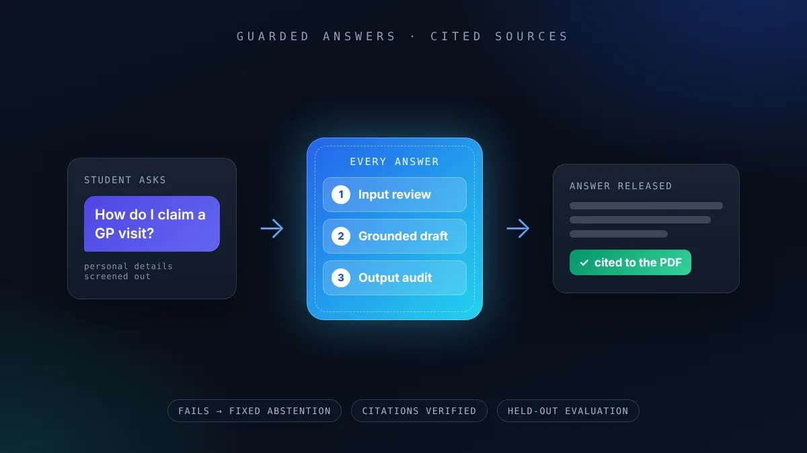
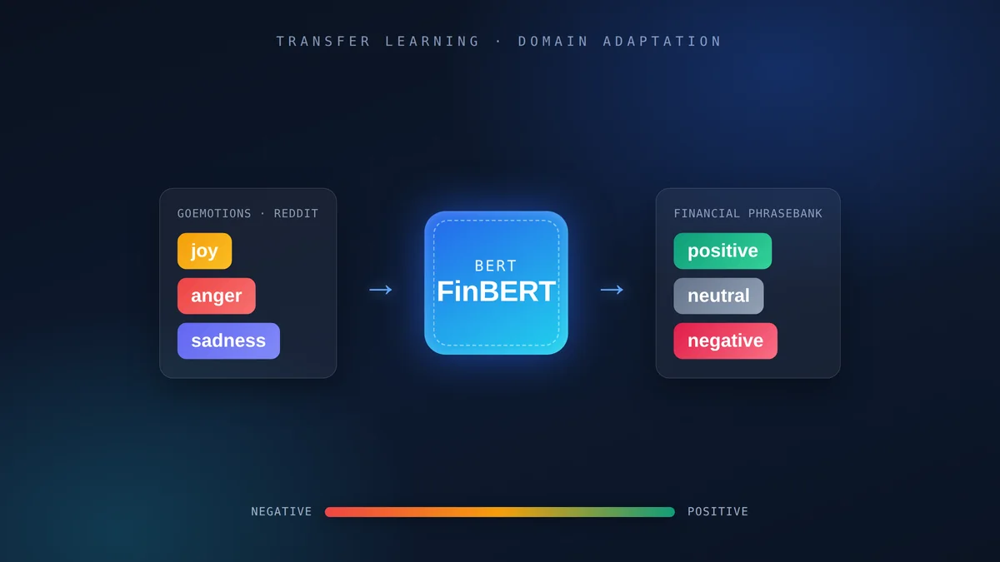
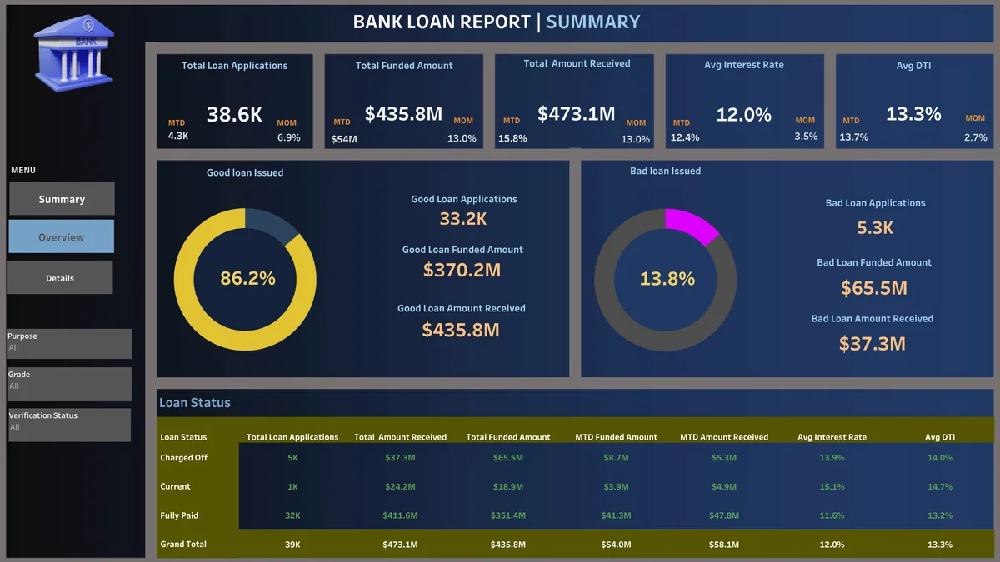

Profile
I am a data analyst based in Melbourne. For close to four years I worked on product and market insights for software and wholesale teams in India, mostly building the weekly reporting that product and marketing managers relied on. I am now part way through a Master of Data Science at Swinburne University.
My background is half commercial and half technical. I studied marketing and business analytics before moving into analysis proper, so I tend to ask what a number is for before I go and calculate it. Day to day I work in SQL, Python, R, Tableau and Power BI.
Available now for graduate and junior data analyst roles in Melbourne. Australian permanent resident with full working rights.
Key skills
Selected work




Thanks for reading,
Bikram Bhattarai